adas.utils builds and analyses 2n factorial plans following Montgomery's Design and Analysis of Experiments. All DoE functions start with fp_, take and return a factorial.plan tibble, and are pipe-friendly (%>% or |>). Factors are coded -1/+1 and named A, B, C…
fp_design_matrix(arg, rep = 1, levels = c(-1, 1))
arg is the number of factors, or a one-sided formula such as ~A*B*C. Rows are in Yates' standard order with a randomised RunOrder.fp_design_matrix(2)
| StdOrder | RunOrder | .treat | .rep | A | B | Y |
|---|---|---|---|---|---|---|
| 1 | 1 | (1) | 1 | -1 | -1 | NA |
| 2 | 3 | a | 1 | 1 | -1 | NA |
| 3 | 2 | b | 1 | -1 | 1 | NA |
| 4 | 4 | ab | 1 | 1 | 1 | NA |
StdOrderYates' standard order
RunOrderrandomised order: run tests this way
.treattreatment code: (1), a, ab, center, axial
.repreplicate number
Yyield, to be filled with results
fp_design_matrix(3, rep = 2) # 2·2³ fp_design_matrix(~Speed*Weight) fp_design_matrix(2, levels = -1:1) # 3²
Custom factor names break the alias analysis of fractional plans: prefer fp_add_names().
fp_info(x)Print the plan's properties: defining relationship, factors, levels, fractions, type (plain, fractional, centered, composite).fp_treatments(3)Treatment codes in Yates' order: (1) a b ab c ac bc abc# 1 design; run tests in RunOrder fp <- fp_design_matrix(4) %>% fp_write_csv("plan.csv") # 2 load results, fit, screen effects fp <- fp %>% fp_read_csv("plan.csv") m <- lm(Y ~ A*B*C*D, data = fp) daniel_plot_hn(m) # 3 reduce the model anova(lm(Y ~ A*C + A*D, data = fp))
Attach real-world meaning to coded factors; stored as plan attributes.
fp_add_names(dm, ...)Long names, e.g. A = "Temperature (°C)"fp_add_scale(dm, ..., suffix = "_s")Add columns with factors in physical units, from c(low, high) ranges.fp <- fp_design_matrix(2) %>%
fp_add_names(A = "Temperature (°C)",
B = "Pressure (bar)") %>%
fp_add_scale(A = c(20,30), B = c(2,3))
| .treat | A | B | A_s | B_s | Y |
|---|---|---|---|---|---|
| (1) | -1 | -1 | 20 | 2 | NA |
| a | 1 | -1 | 30 | 2 | NA |
| b | -1 | 1 | 20 | 3 | NA |
| ab | 1 | 1 | 30 | 3 | NA |
fp_name(fp, "A")→ "Temperature (°C)"fp_scale(fp, "A")→ c(20, 30)fp_scaled_axis(fp, "A")A ggplot2 secondary axis showing physical units and the factor name.... + scale_x_continuous(sec.axis =
fp_scaled_axis(fp, "A")) +
labs(colour = fp_name(fp, "B"))
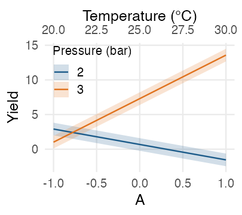
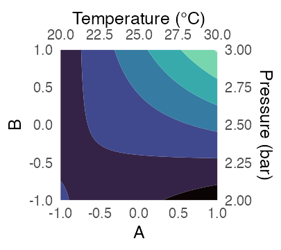
Interaction plot and response surface, coded units below/left, physical units above/right.
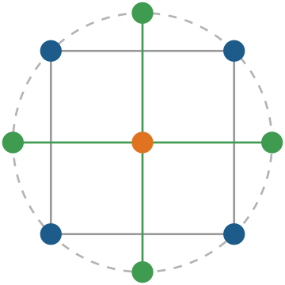
fp_augment_center(dm, rep = 5)Add replicated center points to test for curvature.fp_augment_axial(dm, rep = 1)Add axial points at ±2n/4 → rotatable central composite design (CCD).fp_design_matrix(2, rep = 3) %>% fp_augment_center(rep = 4) %>% fp_augment_axial(rep = 2)
Center points first; if I(A^2) turns out significant, add axial points and fit the quadratic terms.
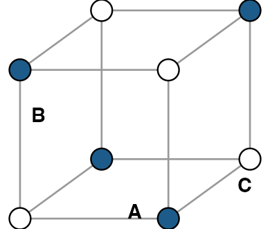
fp_fraction(dm, formula, remove = TRUE)Keep the ½ fraction where the defining relationship I = ABC, written ~A*B*C, is +1. Repeat p times for a 2n−p plan.# 2^(5-2) plan, I=ABCD=BCDE
fp_design_matrix(5) %>%
fp_fraction(~A*B*C*D) %>%
fp_fraction(~B*C*D*E)
remove = FALSE keeps both halves and adds an ABC column to filter(ABC == 1) later. The option is sticky in later calls.
fp_write_csv()Yfp_read_csv()dm %>% fp_write_csv("plan.csv")
dm <- dm %>% fp_read_csv("plan.csv")
Plan attributes travel as # comments; type = 2 uses ; separators. fp_write_csv() returns dm invisibly.
fp_defrel(~A*B*C)Build a defining relationship (also fp_defrel(3)).fp_effect_names(~A*B*C)All effects: A B AB C AC BC ABCfp_alias_list(~A*B*C*D)Named list of aliases: $A "BCD", $AB "CD", …fp_alias(~A*B*C*D)Logical effect × effect alias table.fp_gen2alias("ABCD", "BD")Alias of an effect given a generator → "AC"fp_all_drs(~A*B*C, ~B*C*D)Add the dependent one: ~A*B*C, ~B*C*D, ~A*Dfp_merge_drs(~A*B*C, ~B*C*D)The merged one: ~A*B*C*Dfp_alias_matrix(...)Alias matrix from formulas or from a fractional plan; cells tell which DR causes the alias. Has plot() and as_tibble() methods.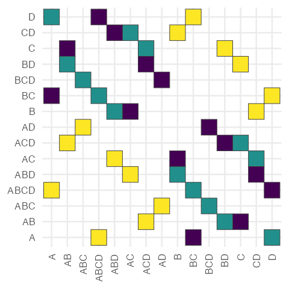
fp_alias_matrix( ~A*B*C, ~B*C*D) %>% plot()
Colour = generating DR: ABC, BCD or AD.
Screening plots for unreplicated factorial plans, ggplot2 layers for half-normal and Pareto charts, outlier and normality checks, multiple comparisons, and modelr-style helpers for predictions and residuals. All plots return ggplot objects: add layers and themes with +.
For unreplicated 2n plans there are no residual degrees of freedom: significant effects are the ones that stand out from the normal line.
m <- lm(Y ~ A*B*C*D, data = filtration)
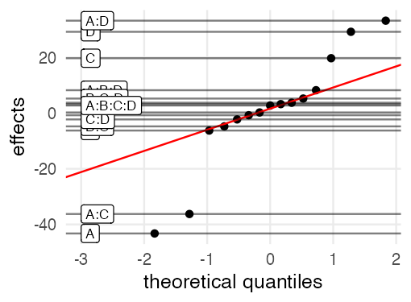
daniel_plot_qq(m)Normal QQ plot of the effects, every effect labelled.alpha, xlim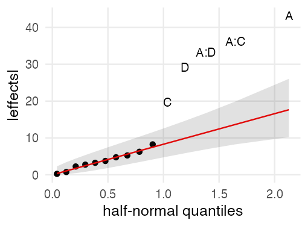
daniel_plot_hn(m, label_n = 6)Half-normal plot of |effects|, labels the top label_n. line.p = c(0, 0.4) fits the line through the origin.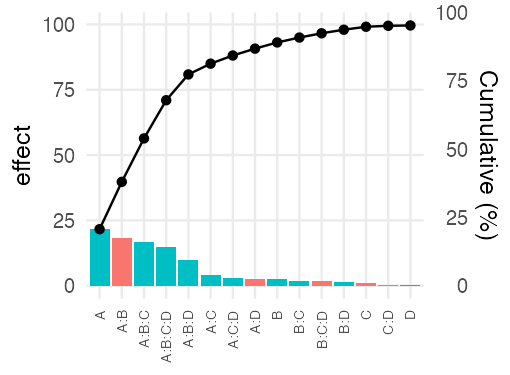
pareto_chart(m)Sorted |effects| coloured by sign, plus cumulative %.pareto_chart(df, labels, values) for a data frame.Here: B is not significant, reduce to Y ~ A*C + A*D.
Map aes(sample = ...), optionally labels = ...; works with group/colour.
geom_qqhn(label_n = 0, abs_sample = TRUE)Points; label the label_n largest.geom_qqhn_line(line.p = 0.25)Reference line through the given quantiles.geom_qqhn_band(line.p, conf.level = 0.95)Confidence band around the line.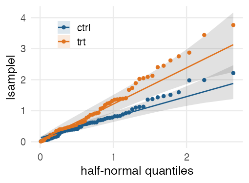
ggplot(df, aes( sample = value, colour = group)) + geom_qqhn() + geom_qqhn_line() + geom_qqhn_band()
Map aes(x = category, y = value); bars are sorted by |value|.
geom_pareto_bars()Sorted bars of |value|.geom_pareto_line(cumulative = "raw")geom_pareto_point(cumulative = "raw")Cumulative line and points; "proportion" for 0–1.scale_y_pareto(percent_name = "Cumulative (%)")y scale with a secondary cumulative % axis.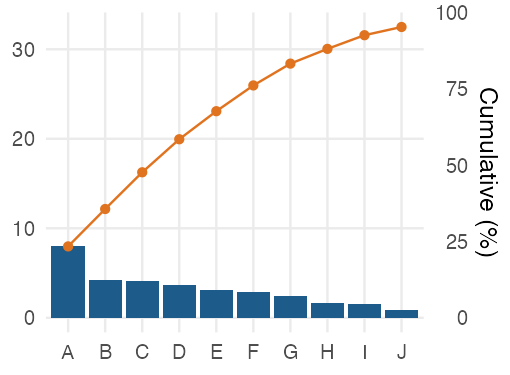
ggplot(df, aes(cat, val)) + geom_pareto_bars() + geom_pareto_line() + geom_pareto_point() + scale_y_pareto()
Each geom_* has a matching stat_*: stat_qqhn(), stat_qqhn_line(), stat_qqhn_band(), stat_pareto_bars(), stat_pareto_line().
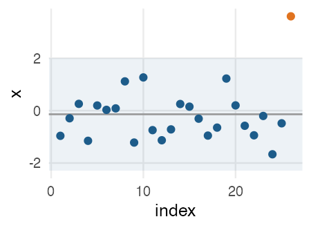
chauvenet(x, threshold = 0.5)Chauvenet's criterion: reject the most extreme value if its expected frequency is below threshold.chauvenet(x) #> Suspect outlier: 21, value 6 #> Decision: reject it
Returns a list with index, value, expected, reject.
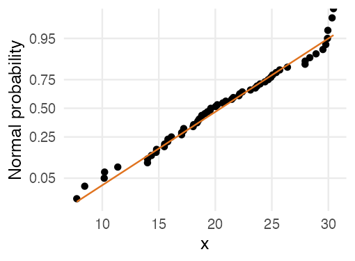
normplot(data, var, breaks, linecolor = "red")Normal probability plot: an alternative to the QQ plot with a probability axis.ggTukey(obj, ...)Plot Tukey's HSD intervals with ggplot2. Accepts a TukeyHSD object (which = 1), or a data frame and a formula, optionally split by a second factor.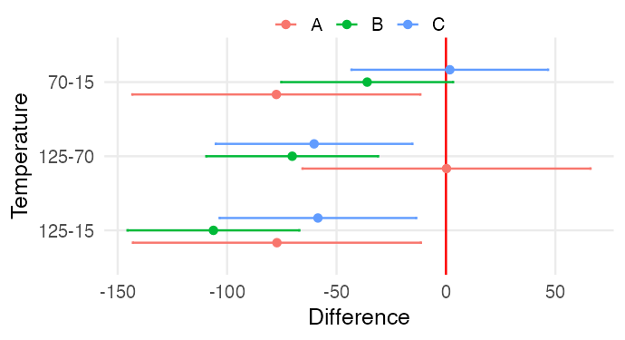
aov(Response ~ Temperature, df) %>%
TukeyHSD() %>% ggTukey()
df %>% ggTukey(Response ~ Temperature,
splt = ~Material)
Pipe-friendly helpers from the retired modelr package.
add_predictions(data, model, var = "pred", ...)... goes to predict(): interval = "confidence" adds fit, lwr, upr.add_residuals(data, model, var = "resid")spread_predictions(data, m1, m2)spread_residuals(data, m1, m2)One column per model.gather_predictions(data, m1, m2)gather_residuals(data, m1, m2)Long format, with a model column.fp %>%
add_predictions(m, interval =
"confidence") %>%
ggplot(aes(A, fit)) +
geom_ribbon(aes(ymin=lwr, ymax=upr)) +
geom_line()
expand_formula(Y ~ (A + B)^3)→ Y ~ A + B + A:Bexamples_url("battery.dat")URL of a course dataset, ready for reading:examples_url("battery.dat") %>%
read.table(header = TRUE)
filtrationUnreplicated 24: filtration speed vs. temperature, pressure, concentration, agitation.battery3² × 4 reps: battery life vs. temperature and plate material.cottonOne-way, 5 levels: yarn strength vs. cotton %.ccd_experiment_yieldList of base, center, axial yields for a sequential 2-factor CCD.